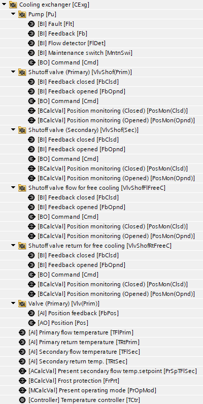
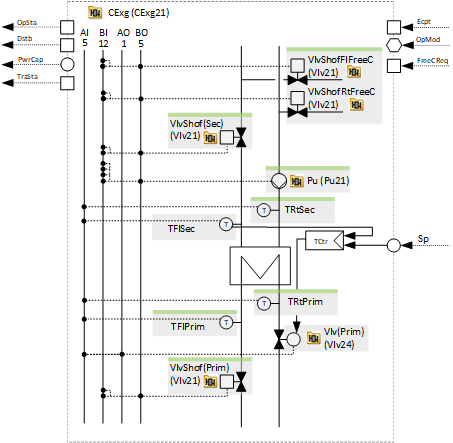
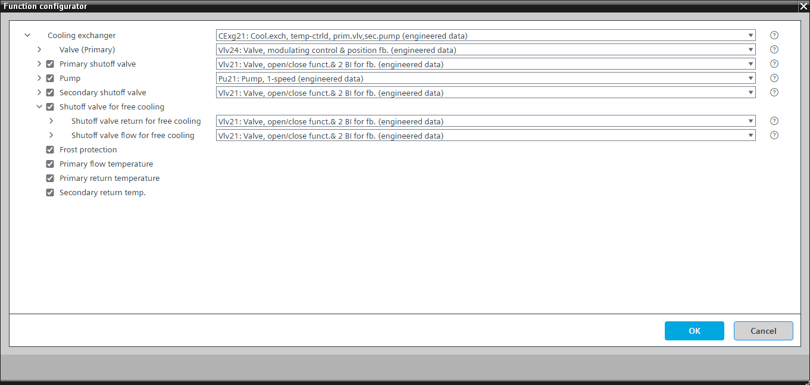

[CExg21] Cooling exchanger, temperature-controlled, with primary valve and secondary pump
Program block, name / node subtype: [CExg21] Cooling exchanger, temperature-controlled, with primary valve and secondary pump
Library hierarchy: Cooling and refrigeration equipment
Family: CGen
Project tree | Diagram |
|---|---|
 |  |
Configurator


Program blocks are stored in the library without I/Os. Use the auto-create and auto-connect functions to create I/Os and/or to connect them to the interface blocks, e.g., R_A, CMD_B. Alternatively, take the I/Os from the folder containing the predefined I/Os in the library and/or from the plant and connect them to the interface blocks.
Function
Controls a cooling exchanger.
A PID controller compares the present secondary flow temperature setpoint (PrSpTFlSec) to the secondary flow temperature and changes the position of a primary valve (Vlv24).
The program has settings for the nominal power of the cooling exchanger and for the transient state times (a signal that the cooling exchanger is in a transient state that blocks the logic for generating further step-up and step-down pulses for the power control and compensation) when switching on or off (e.g., 5 minutes when switching on and 2 minutes when switching off).
The switch-on and switch-off sequence for the valves and the pump is defined in the function block CMDSEQ_B.
Optional functions
This program block has the following optional functions:
Option: Primary shutoff valve (1xBO, 2xBI)
Controls a shutoff valve that opens when the cooling exchanger is running (Vlv21).
Option: Pump (1xBO, 4xBI)
Controls a pump (Pu21). Different alternatives are possible, e.g., TwnPu21.
The pump runs when the cooling exchanger is running, and the optional shutoff valve is open.
Option: Secondary shutoff valve (1xBO, 2xBI)
Controls a shutoff valve that opens when the cooling exchanger is running (Vlv21).
Option: Frost protection
If one of secondary temperatures of the cooling exchanger falls below a certain value, e.g., 4 °C, the operating mode switches to "Off", and the secondary shutoff valve opens and the pump starts to ensure water circulation.
Mandatory elements
Name | Description | Type | Alarm / Notification class | Trend / Type | |
|---|---|---|---|---|---|
Vlv(Prim) | Valve (Primary) | N/A | N/A | ||
TCtr | Temperature controller | Ctr: Controller | No | No | |
TFlSec | Secondary flow temperature | AI: Analog input | Yes, 4 | Yes, 2 | |
PrSpTFlSec | Present secondary flow temperature setpoint | ACalcVal: Analog calculated value | No | No | |
Optional elements
Name | Description | Type | Alarm / Notification class | Trend / Type | |
|---|---|---|---|---|---|
VlvShof(Prim) | Shutoff valve (Primary) | N/A | N/A | ||
Pu | Pump | N/A | N/A | ||
VlvShof(Sec) | VlvShof (Secondary) | N/A | N/A | ||
TRtPrim | Primary return temperature | AI: Analog input | No | Yes, 2 | |
TRtSec | Secondary return temperature | AI: Analog input | No | Yes, 2 | |
TFlSec | Secondary flow temperature | AI: Analog input | Yes, 4 | Yes, 2 | |
TFlPrim | Primary flow temperature | AI: Analog input | No | Yes, 2 | |
FrPrt | Frost protection | BCalcVal: Binary calculated value | Yes, 5 | No | |
Further options
Description |
|---|
Shutoff valve for free cooling Elements that belong to this option: VlvShofFlFreeC | Shutoff valve flow for free cooling | [Vlv21] Valve, open/close function & 2 BI for feedback VlvShofRtFreeC | Shutoff valve return for free cooling | [Vlv21] Valve, open/close function & 2 BI for feedback |